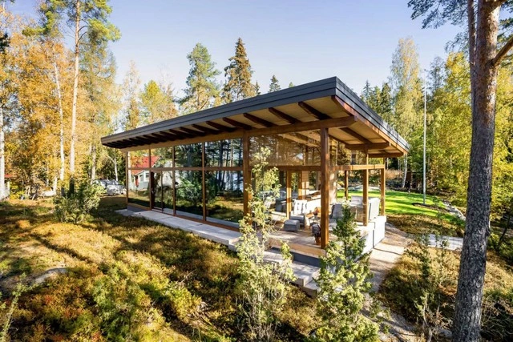
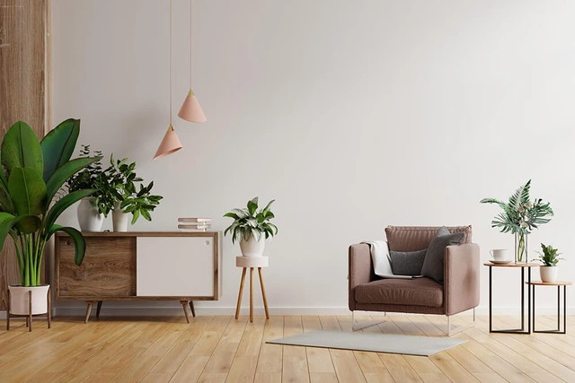
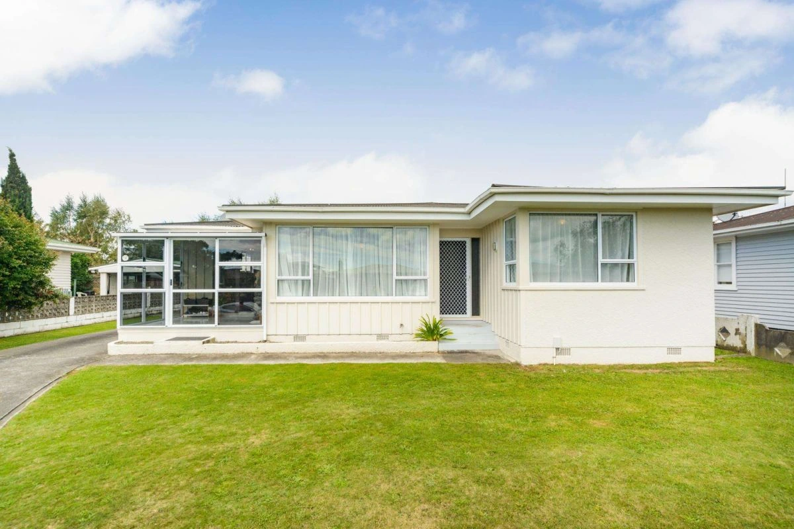
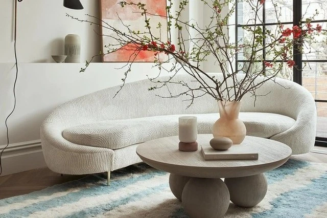
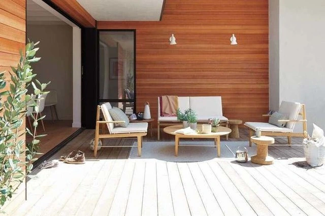
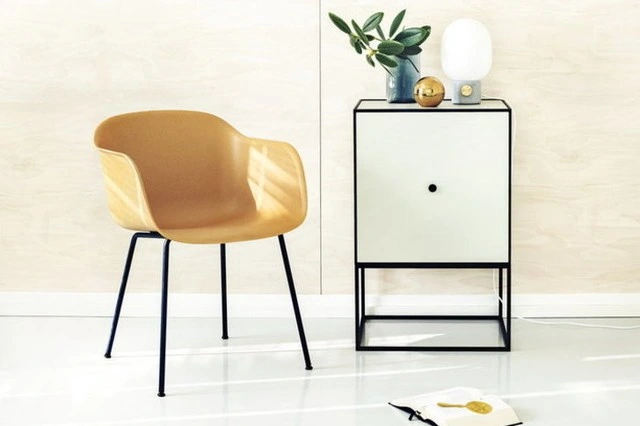
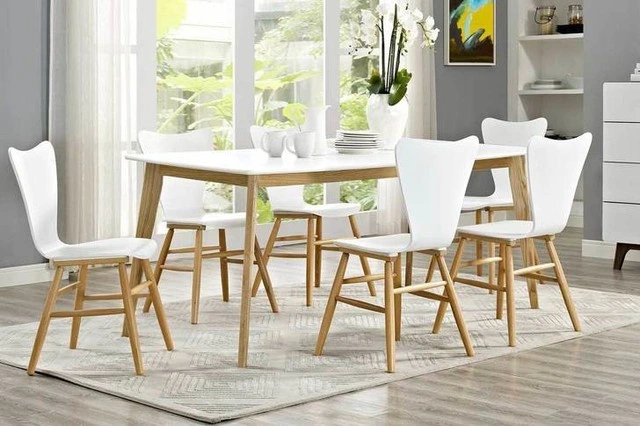
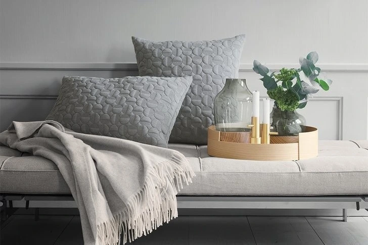

Nội thất phong cách Bắc Âu (Scandinavian) trong một số quốc gia như Đan Mạch, Thụy Điển, Na Uy, Iceland, Phần Lan hay Quần đảo Faroe được coi là một nền văn hóa. Tại các nơi này thì sự đơn giản tuy hữu hạn nhưng lại ẩn chứa sự vô hạn của cảm xúc, sáng tạo. Và khi được đẩy lên cao nhất, nó không chỉ là phong cách Scandinavian mà còn là thẩm mỹ Scandinavian.
Theo các chuyên gia thì hạnh phúc của người Bắc Âu là được làm mọi việc để tinh chỉnh nội thất, ngoại thất của ngôi nhà nhằm hướng đến một cuộc sống ấm cúng nhưng phải đảm bảo sự đơn giản để cảm xúc có thể có "chỗ" phát triển và thăng hoa.
Ngôi nhà mang phong cách nội thất (hoặc ngoại thất) Bắc Âu là ngôi nhà gắn liền với thiên nhiên nhằm mang lại cảm xúc dễ chịu nhất cho con người.
Đồng hành với sự đơn giản, tinh chỉnh chính là sự gọn gàng, sạch sẽ, thông thoáng. Quan điểm hạnh phúc và tận hưởng của người Bắc Âu đã từng là: "Chúng tôi không thích chủ nghĩa vật chất, nhưng yêu thích tính thẩm mỹ. Chúng tôi xem ít hơn nhiều, và vì vậy, mọi thứ dù nhỏ, rất nhỏ, rất nên được lựa chọn cẩn thận. Chất lượng không phải là tinh hoa, mà là sự bền vững". Nói cách khác, tất cả các nhà thiết kế và đồ nội thất mà bạn tìm thấy ở trong ngôi nhà Bắc Âu sẽ gọn gàng trong nội hàm của "sự hygge, mys hay sauna"…
Vật dụng trong ngôi nhà phong cách Bắc Âu tối giản song đầy tính nghệ thuật và bền vững như không gian thoáng đạt, cây xanh tươi tắn và đồ đạc có tính nghệ thuật cao.
Những ngôi nhà Scandinavian, cả nội thất và ngoại thất, được thiết kế liên quan đến môi trường tự nhiên. Các quốc gia thấm đẫm văn hóa Scandinavian như Đan Mạch, Thụy Điển, Na Uy, Iceland, Phần Lan hay Quần đảo Faroe… có chung một môi trường tự nhiên. Và đó là cơ sở để họ tạo ra một phong cách thẩm mỹ tương tự và tương đồng nhau.
Những ngôi nhà tối giản mang lại cảm xúc tích cực cho con người.
Hơn cả một nền văn hóa Bắc Âu - phong cách Scandinavian còn được nâng tầm lên thành nghệ thuật Scandinavian.
Ngôi nhà Bắc Âu luôn mở và chan hòa thiên nhiên.
Đồ đạc trong ngôi nhà Bắc Âu tối giản tuyệt đối nhưng tinh tế, có tính thiết kế và phù hợp cá nhân rất cao.
Không gian Bắc Âu là không gian mà con người với thiên nhiên là trung tâm.
Mục tiêu chính của căn nhà phong cách Bắc Âu chính là "cải thiện" cuộc sống hằng ngày của gia chủ bằng cách sử dụng các kết cấu đơn giản, kiểu dáng đẹp và nhấn mạnh đến chức năng (tức tính tiện dụng). Thế nên trong một ngôi nhà Bắc Âu bạn sẽ thấy nhiều đồ nội thất thoải mái, nhưng đơn giản về mục đích sử dụng. Và nhờ sự đáp ứng được với vị trí và khí hậu mà ngôi nhà phong cách Bắc Âu luôn giữ cho cư dân thoải mái và có thể sống tốt trong môi trường tự nhiên mà họ tạo ra.
Tuy mang gam màu trung tính, đơn sắc song không gian Scandinavian vẫn đầy cuốn hút bởi sự hòa quyện của các tông sắc vô cùng hài hòa.
Nếu muốn thay đổi và làm mới không gian sống của mình, nhất là trong mùa hè nóng nực và "ngột ngạt" thì bạn hãy thử tham khảo phong cách nội thất của người Bắc Âu trên đây nhé!
Nguồn: Homedit, Lonny, Interior Design Ideas